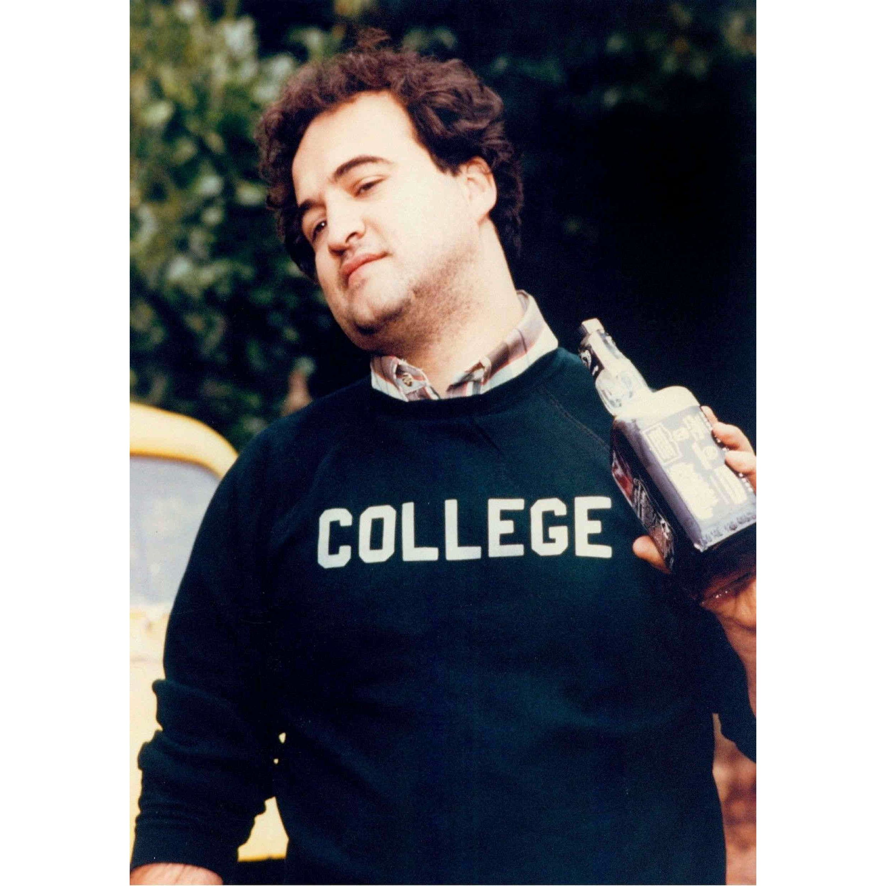

In the wake of the recent sports college admissions scandal, another scandal has arisen with much less publicity but potentially wider ramifications. The sports admissions scandal involved relatively well-off families bribing coaches and/or admissions officers to falsely label their children as recruited athletes. Over a 10 month period the FBI tracked and ultimately filed charges against 50 wealthy parents who allegedly paid 10k's-100k's to get their children into selective colleges like Yale, Stanford and USC.
The newest college admissions scandal involves more modestly well-off suburban parents transferring legal guardianship of their high school-aged children to poorer friends and relations. The article cites one case where legal guardianship lasted only one month and existed on only on paper (no habitation with or financial aid from the new guardian). The income/assets of the original parents are never reported and instead those of the new poorer legal guardian are used to qualify the kids for more financial aid.
Another big incentive for switching legal guardianship a year or so before college applications is that the kids appear economically and socially disadvantaged potentially boosting admission prospects. Court petitions to appoint new guardians can cite any justification generally without evidence as long as all parties agree (e.g. broken families, financial ruin, mental illness, abusive homes, etc.) All things equal, college admissions officers are generally more sympathetic to students who overcome personal as well as financial hardships.
In fact, starting this year the SAT will calculate an 'Adversity Score' to be included with test transcripts to help admissions officers made such finer-grained distinctions between the growing number of competitive candidates at good schools. This Adversity Score will include environmental factors such as neighborhood crime rates, housing values and poverty levels. While there has been much talk of addressing large and growing economic inequality in society, this is the first hard data metric offered by testing organizations to help colleges quantify 'economically disadvantage'.
Just as Economists see 'markets in everything'. I advise my Liberal Arts students that they all must understand economics to some degree in order to make better sense of the world. To become good data scientists they need to cultivate a critical eye in every situation. They need learn to identify (or at least be aware of) important hidden variables like economic incentives, latent biases and ethics involved in nearly every non-trivial model involving human behavior and decisions.
A lucrative cottage industry of college admissions advisors and consultants has arisen in response to the 'market of college admissions'. Given increasingly competitive admissions, these consultants (often former college admission officers themselves) offer inside baseball tips for wealthy parents to arbitrage on frictions in the process. No doubt the rising importance of 'economical disadvantage along with the ambiguous and malleable interpretation and presentation of such was one
Goodharts Law in action
Unlike the sports admission scandal, this guardianship admission scandal has the potential to be much more damaging to fair admissions.
Podcast
Personal note, I was